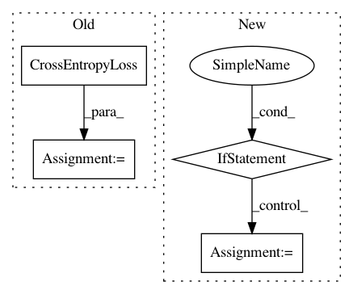

8030eeca74b6634f2a60168516573912aaa9cd65,model/modeling.py,BertForPreTraining,forward,#BertForPreTraining#Any#Any#Any#Any#Any#,701
Before Change
prediction_scores, seq_relationship_score = self.cls(sequence_output, pooled_output)
if masked_lm_labels is not None and next_sentence_label is not None:
loss_fct = CrossEntropyLoss(ignore_index=-1)
masked_lm_loss = loss_fct(prediction_scores, masked_lm_labels)
next_sentence_loss = loss_fct(seq_relationship_score, next_sentence_label)
total_loss = masked_lm_loss + next_sentence_loss
After Change
pooled_output = self.dropout(pooled_output)
logits = self.classifier(pooled_output)
if labels is not None:
loss_fct = CrossEntropyLoss()
loss = loss_fct(logits, labels)
return loss, logits
else:
return logits
class BertForQuestionAnswering(PreTrainedBertModel):
BERT model for Question Answering (span extraction).
This module is composed of the BERT model with a linear layer on top of
the sequence output that computes start_logits and end_logits
In pattern: SUPERPATTERN
Frequency: 3
Non-data size: 4
Instances
Project Name: NVIDIA/sentiment-discovery
Commit Name: 8030eeca74b6634f2a60168516573912aaa9cd65
Time: 2018-11-20
Author: raulp@nvidia.com
File Name: model/modeling.py
Class Name: BertForPreTraining
Method Name: forward
Project Name: dmlc/dgl
Commit Name: 650f6ee1e0b3c2888a2c6d7db9c3d159cae5a583
Time: 2019-08-27
Author: expye@outlook.com
File Name: examples/pytorch/sgc/sgc_reddit.py
Class Name:
Method Name: main
Project Name: NVIDIA/sentiment-discovery
Commit Name: 8030eeca74b6634f2a60168516573912aaa9cd65
Time: 2018-11-20
Author: raulp@nvidia.com
File Name: model/modeling.py
Class Name: BertForSequenceClassification
Method Name: forward